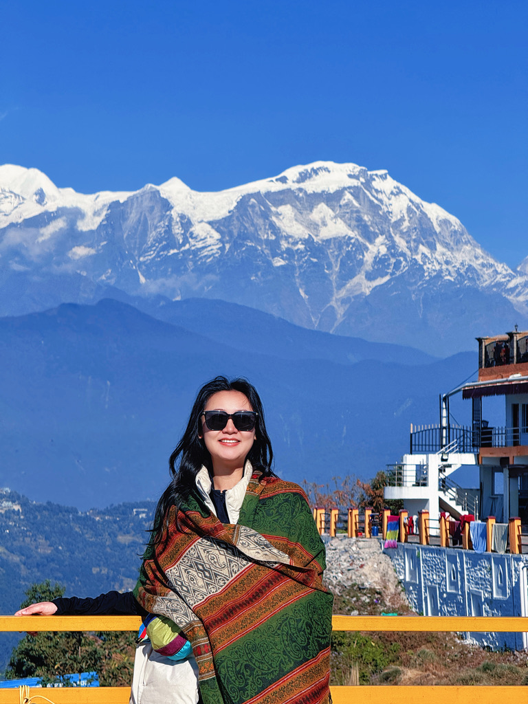
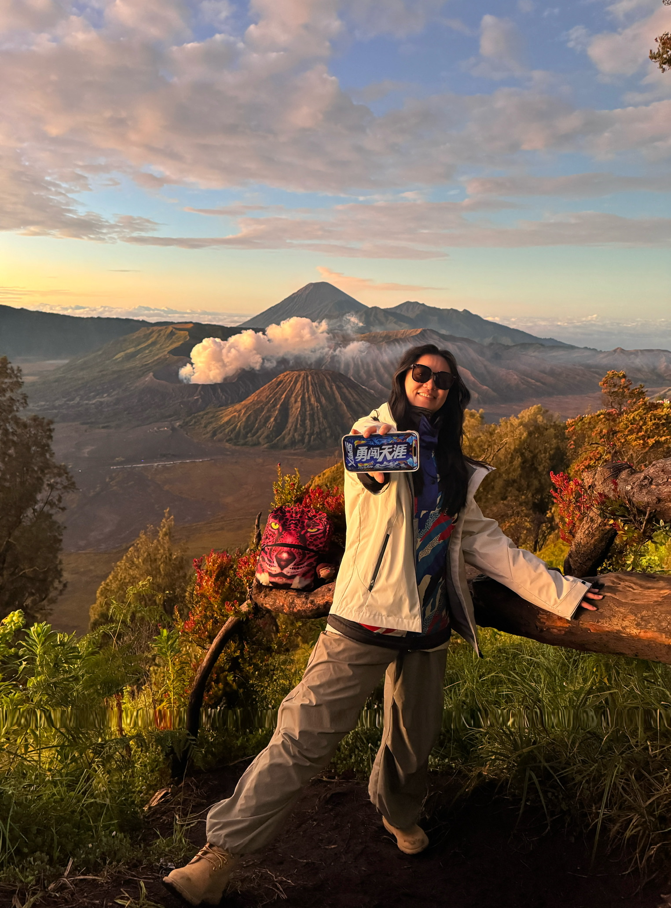
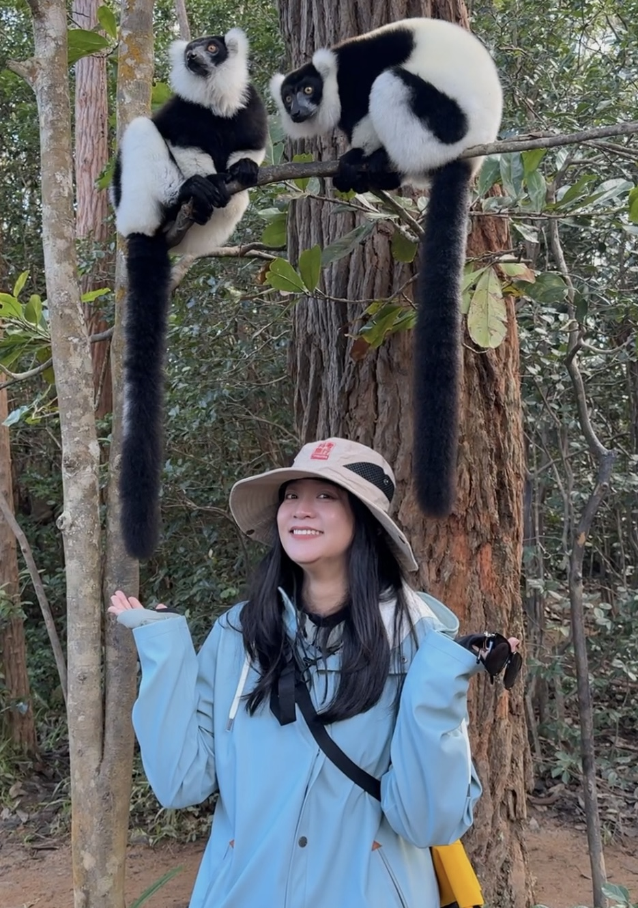
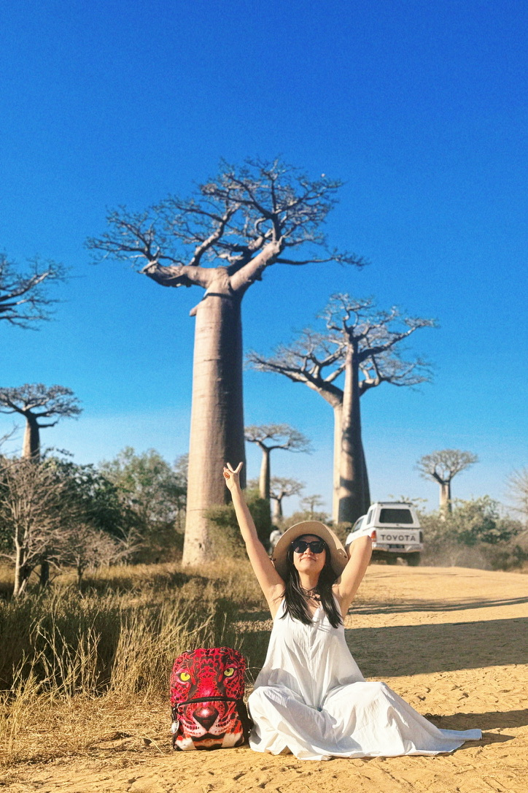

BEYOND RESEARCH
Places, people
& perspectives.
A collection of places I have explored, trails I have walked, and cultural portraits I have enjoyed. Outside research, I make time for yoga, calligraphy and local culture.
01 / TRAVEL
Travel & hiking
A personal photo journal of places, trails and small discoveries.






Replace sample captions with the actual place or a short memory.
02 / CULTURE & PORTRAITURE
Traditional dress & cultural portraits
Twelve portraits documenting traditional clothing, craft and cultural expression.


Use accurate, respectful captions for each culture or region. Publish only photos you own or have permission to share.
03 / EVERYDAY LIFE
Yoga & other interests
A few things that keep life balanced beyond work.
Yoga
Movement, focus and time to reset.
Chinese calligraphy
Patience, rhythm and attention to detail.
Peking Opera
A lasting interest in traditional performance and storytelling.
Food & local culture
Getting to know places through everyday life.